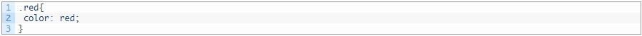
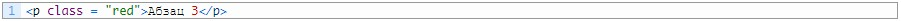
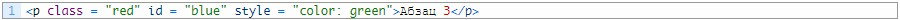
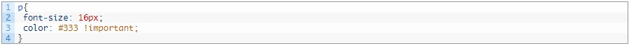
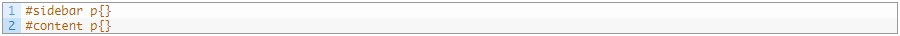
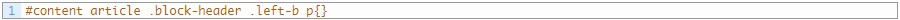

Как в CSS переопределить стиль
От автора: работая с css вам в любслучае придется переопределять стилЗадания свойств для глобальных селекторовв любом случае не хватит. Сегодпосмотрим, как в css переопределистиль любому элементу.
Первое – глобальные селекторы тегов
Селекторы тегов предназначены для того, чтобы давать стили всем элементам одного типа. Например, спискам.
Чтобы убрать маркеры у всех списков на веб-страницах сайта, достаточно в css записать это:
- Абзац 1
- Абзац 2
- Абзац 3
- Абзац 4
- Абзац 5
Ну сильно напрягаться не будем, всего лишь зададим цвет и размер шрифта. Хорошо, это просто оформление для всех параграфов. Но теперь допустим, что перед вами появилась задача: определенные абзацы нужно выделить красным цветом. Как это сделать?
Достаточно просто. Опишем в css новый стилевой класс. Допустим, назовем его red, чтобы было понятно.
Теперь остается задать его нужным абзацам. Допустим, мне нужно сделать его для второго и третьего. Я надеюсь, прописывать стилевые классы вы умеете, это делается так:
Ну и также поступаем с другим абзацем. В итоге мы уже переопределили стиль. То есть цвет текста всех абзацев был темно-серым, а мы изменили цвет некоторых параграфов на красный. Вот вам и переопределение стилей.
- Абзац 1
- Абзац 2
- Абзац 3
- Абзац 4
- Абзац 5
Но задание стилевого класса годится в том случае, когда нужно переопределить правила группе элементов. То есть нескольким параграфам, изображениям и т.д. Но что делать, если переопределить стили нужно всего лишь одному элементу? Для этой цели уже лучше использовать идентификатор.
Идентификатор (id) используется для того, чтобы присвоить уникальную метку конкретному элементу на веб-странице.
Таким образом к нему можно будет обращаться в css через этот идентификатор и задавать какие-то правила. Они будут применены, даже если ранее для этого элемента были заданы абсолютно другие стили.
Например, у нас есть 2 абзаца, в котором текст окрашен красным цветом. Но если одному из них задать идентификатор и потом описать в css стили для этого селектора, то они будут приоритетнее, чем правила класса.

- Абзац 1
- Абзац 2
- Абзац 3
- Абзац 4
- Абзац 5
Обновим страницу и убедимся в том, что цвет текста синий. Но по сути для нашего абзаца цвет текста задается в трех местах. Во-первых, в селекторе тега – темно-серый. Во-вторых, в классе – красный. В-третьих, в идентификаторе.
Ломаем все правила с помощью !important
Мы подобрались к css-приему, который ломает все правила приоритетности и отправляет их в мусорное ведро. Это запись !important, которая помечает свойство как самое важное. Давайте рассмотрим тот же самый пример. У нас есть параграф, его код приведен выше. Как видно, для него записано аж 4 разных варианта цвета.
В частности, в селекторе тега указан темно-серый цвет, но он перебивается классом, идентификатором и внутренними стилями, которые в нашем случае перебивают все остальное. Но есть простой способ перебить все это. Запишем так:
То есть те же самые стили для селектора всех абзацев, только при определении цвета после значения дописано !important. Эта команда помечает стиль как важный. То есть тот, который обязательно должен применится. Ну проверим:
- Абзац 1
- Абзац 2
- Абзац 3
- Абзац 4
- Абзац 5
Все абзацы одного цвета – темно-серого. Заметьте. Что ни класс, ни идентификатор, ни даже встроенные стили, которые по идее применяются в последнюю очередь и должны перебивать все, не могут переопределить цвет и он остается таким, каким он задан в селекторе тега.
Вот такие пироги. Правда, я советую вам не прибегать слишком часто к !important. А если нет острой нужды, то вовсе не прибегать. Естественно, если вы пропишите для стилевого класса !important, то уже этот стиль будет самым важным. Причем в состязании: селектор тега !important и класс !important, победит класс. И вы уже понимаете, по какой причине. Ну и так далее. Получается, что можно встроенному стилю тоже дописать !important. Вот это будет уже конечное переопределение, которое невозможно перебить.
Ну опять же, не советую вам слишком много играться с important, это считается плохим тоном верстки.
Итог
Окей. С переопределением мы вроде разобрались. Конечно, мы рассмотрели не все способы переопределения. О некоторых вы можете догадаться и сами. Например, использование вложенных селекторов. В принципе можно легко догадаться, что абзацы в боковой колонке легко отделить от абзацев в основной части сайта.
Заметьте, что тут мы никаких классов и идентификаторов именно абзацам не задавали. Ну а уровень вложенности селекторов может быть любым. Вы можете написать хоть так:
Все зависит от сложности разметки. Помимо комбинированных селекторов есть и масса других, помогающих так или иначе переопределить оформление. Их вы сможете изучить, если более серьезно возьметесь за изучение css. Например, предлагаю пройти наш курс по CSS3, в котором вы как раз сможете познакомиться с кучей новых интересных селекторов.